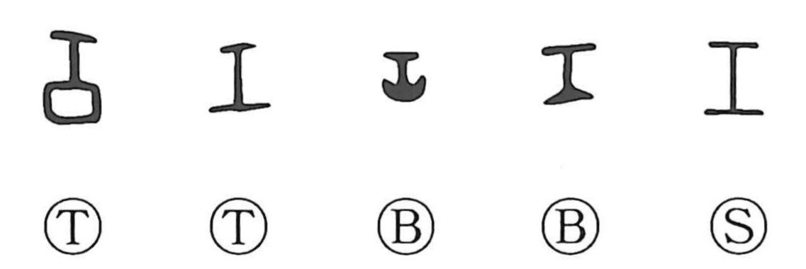

工

Kun: takumi | On: kou, ku
work ・ craft ・ artisan ・ construction
Explanation
工 pictures a tool. Its precise identity is uncertain, though some bronze forms resemble a stand used in metalworking. This practical implement gives the world of making: the craftsperson, skilled work, and what is produced through that skill.
A similar 工 form also occurs as a ritual implement in characters such as 巫, 左, and 尋. The workshop tool and the sacred instrument may have been distinct objects despite their shared written form. Early uses of 工 also name people serving in worship and ceremonial duties.
Those specialized services broaden into official functions and occupations. 工 can thus name the maker, the work, or the skilled service supplied, while its relation with 功 gives accomplishment or a successful result.